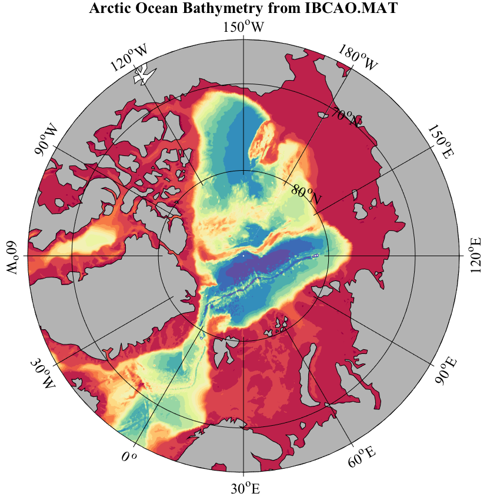

ABOUT_IBCAO International Bathymetric Chart of the Arctic Ocean topography. _______________________________________________________________________  _______________________________________________________________________ IBCAO.MAT and IBCAO.NC contain Artic topography data at a resolution of 30 arc second, or 1/120 of a degree, from the International Bathymetric Chart of the Arctic Ocean (IBCAO) Version 3.0. In Matlab, LOAD IBCAO for the Matlab version, or NCLOAD IBCAO for the NetCdf version, leads to a structure containing the following fields: ibcao.about Pointer to this document ibcao.lat Array of latitudes [3121 x 1] ibcao.lon Array of longitudes [43201 x 1] ibcao.topo Matrix of topography [3121 x 43201] Typing 'use ibcao' maps these fields into variables in the current workspace. TOPO is in units of kilometers and is positive for above sea level, and negative for below sea level. IBCAO.MAT is a Matlab version, while IBCAO.NC is a NetCDF version. These both contain identical data. IBCAO is distributed as a part of JDATA, a supplement to the software toolbox JLAB, and is available at http://www.jmlilly.net. Topography at lower latitudes can be found from the Smith and Sandwell dataset, see READTOPO. A merged 1/6th degree version of both datasets, called JTOPO, is is distributed with JLAB; see ABOUT_JTOPO for details. __________________________________________________________________ Data and documentation This dataset is simply a mat-file version of the IBCAO file 'IBCAO_V3_30arcsec_RR.grd', available from http://www.ngdc.noaa.gov/mgg/bathymetry/arctic/grids/version3_0/ The reference for this dataset is Jakobsson, M., L. A. Mayer, B. Coakley, J. A. Dowdeswell, S. Forbes, B. Fridman, H. Hodnesdal, R. Noormets, R. Pedersen, M. Rebesco, H.-W. Schenke, Y. Zarayskaya A, D. Accettella, A. Armstrong, R. M. Anderson, P. Bienhoff, A. Camerlenghi, I. Church, M. Edwards, J. V. Gardner, J. K. Hall, B. Hell, O. B. Hestvik, Y. Kristoffersen, C. Marcussen, R. Mohammad, D. Mosher, S. V. Nghiem, M. T. Pedrosa, P. G. Travaglini, and P. Weatherall, The International Bathymetric Chart of the Arctic Ocean (IBCAO) Version 3.0, Geophysical Research Letters, doi: 10.1029/2012GL052219 No copyright or policy is specified in the IBCAO documentation. __________________________________________________________________ Dataset creation For completeness, the m-file ABOUT_IBCAO also contains steps used in the creation of IBCAO.MAT and IBCAO.NC. If you wish to do this yourself, with both JLAB and IBCAO_V3_30arcsec_RR.grd on your search path, typing 'about_ibcao --create' will recreate IBCAO. __________________________________________________________________ See also READTOPO, TOPOPLOT, JDATA, ABOUT_JDATA. 'about_ibcao --f' generates the sample figure shown above. Usage: about_ibcao about_ibcao --create __________________________________________________________________ This is part of JLAB --- type 'help jlab' for more information (C) 2015--2019 J.M. Lilly --- type 'help jlab_license' for details